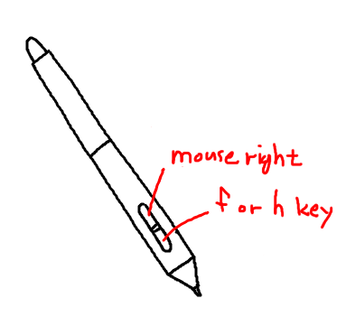
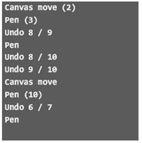
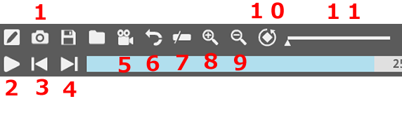
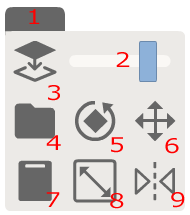

0.Wacom driver settings
1.How to select tools
2.Shortcut keys
3.Pen options
4.Menu buttons
5.Replay mode
6.Reset app
7.How to use Lasso tool
8.How to change canvas size
9.How to use reference layer
10.DEMO <- Top page
1.How to select tools
2.Shortcut keys
3.Pen options
4.Menu buttons
5.Replay mode
6.Reset app
7.How to use Lasso tool
8.How to change canvas size
9.How to use reference layer
10.DEMO <- Top page
Wacom driver settings
Uncheck “Use Windows ink" function on Wacom driver's mapping tap.
If you using non-wacom tablet. I'm not sure it is working correctly. Recommand set the tablet pen button settings as shown below image.

How to select tools
The tool box appears when you press the right mouse button and disappears when you release the right button.
Move mouse cursor to icon you want. and release right mouse button.
To move canvas, press right mouse button + click any button and drag. Exception : Click+Drag to use Zoom, Rotate, Move tool.
The alphabet in parentheses is (right-handed shortcut, left-handed shortcut).
The video below shows how to use the tool box. Watch the mouse button operation.
Shortcut keys
 Shortcut key layout. Green is for right-handed and blue is for left-handed.
Shortcut key layout. Green is for right-handed and blue is for left-handed.Basically it is ON when a key is pressed and OFF when it is released.
| Function | Key | Function | key |
|---|---|---|---|
| Erase | D or J | Lasso tool | R or Y |
| Erase-line tool | Shift + D or J | Line tool | Shift |
| Adjust pen size | F, V orH, N | <- Erase size: while holding down the D or J | |
| Adjust pen opacity | G orB | <- Erase opacity: while holding down the D or J | |
| Move pen option to cursor / reset | F or H | ||
| Zoom tool | W or I | Move canvas | Space |
| Flip canvas horizontal | A or L | Rotae canvas | S or K |
| Fill pen | V or N | Move image | E or Y |
| Reference layer menu ON/OFF | T | ||
| Eye-dropper | C or M | ||
| Undo | Z or . | Draw mode | 1 or 7 |
| Redo | X or , | Replay mode | 2 or 8 |
| Save | Ctrl+S | Playback start/stop | Enter |
| Save as.. | Ctrl+Shift+S | Adjust playback speed | ↑, ↓ |
| Capture mode | Alt+S | Search frames by stroke | ←, → |
| 파일 불러오기 | Ctrl+O | Search frames by 1 frame | Shift+←, → |
| load file to reference layer | Ctrl+Shift+O | ||
| Copy clipboard image to reference layer | Ctrl+Shift+V | Load image from clipboard | Ctrl+V |
| Save full image | Alt+S |
| Rotate image | S |
| Flip image | A |
| Exit capture mode | ESC |
Pen options
 You can move the window by click + Drag on the empty part of this window.
You can move the window by click + Drag on the empty part of this window.If you press the right mouse button on this window, the window will disappear temporarily. [1]: Pen shape
[2]: Pen smoothing
[3]: Pen size
[4]: Pen opacity
[5]: Sharp line ON/OFF, If it is turned ON, lines becomes little sharper.
[6]: Sub-layer ON/OFF, If it is turned ON, is drawn under the existing image. This is useful for coloring under the line art.
* Eraser and pen (line) size and transparency data are managed separately.
 [1]: Current color, Click this button to reset selected color.
[1]: Current color, Click this button to reset selected color.[2]: Press this button and select a color to change the background color. Press it again to return to pen color selection.
[3]: Color history, colors with the eyedropper will not be recorded in color history. If you want to add a new color, right-click on history box.
 The box below the color picker records the usage history of the tool. Click + Drag this box to move the canvas.
Menu Buttons
 [1] Replay Mode
Toggle Replay Mode - Draw mode Click here to see replay-mode details.
[2] Capture Mode
Use this button when you want to save only part of the image or to save the image being drawn in replay mode.
[1] Replay Mode
Toggle Replay Mode - Draw mode Click here to see replay-mode details.
[2] Capture Mode
Use this button when you want to save only part of the image or to save the image being drawn in replay mode. If you drag the area you want to save, the {file name_date_time.png} is saved.
 -1- Exit capture mode
-1- Exit capture mode -2- Save full image
-3- Rotate image
-4- Flip image horizontal
-5- Remove / restore captured image background color
[3] Save
This button saves an image. It checks the file path and name only at the first time. After that, it automatically writes to the same file.
If you want to save as new file, please click this button for a long time.
Two files are saved: "*.png" file and "*.2020" file. "*.2020" file contains original image data with transparent background and replay-data. So usually it is recommended to work with * .2020 files.
This is a rare case the file is in use by another app, you cannot save it, so app trying save as new name with “FileName_new.png”.
[4] Load
You can load *.png, *.gif, *.jpg and *.2020 files. You can also load file by drag & drop into the application window.The maximum image size is 2000x2000 pixel. If the image to be exceeds this size, it will be forcibly resized.
Shortcut key is Ctrl+O.
Load file to reference layer is Ctrl+Shift+O. [5] Load image from clipboard If there is copied image on clipboard, this button will active. Click this button 2 times, or press Ctrl+V 2 times to load from clipbaord [6] Delete all data
Press this button 3 times to delete the replay-data and drawn image.
You can also press shortcut key ESC 3 times. [7] Tool-box ON
Open tool-box and pen options window.
Click+Drag on toolBox to move canvas.
[8] Grid ON/OFF The grid size changes or turns off with every click. [9] Swap menu bar position
The menu position changes up and down. [10] Change UI color
The color changes each time you click. [11] About
Replay Mode
You to see the work process again. Video conversion such as mp4 is not supported.  [1] Capture Mode
Same as the capture mode described above, but captures the currently playing image. [2] Playback start/stop [3, 4] View prev/Next scene
When using Re-recording or Super-undo function, use it to move to the desired frame.
Click to search frame by stroke unit. Right-click (or Shift+click) to search by 1 frames.
The search speed may be slower when searching the previous frame. [5] Re-recording
If you want to re-record from specific image in replay mode, press this button twice. [6] Super-undo
In drawing mode, undo is up to 7 times, but in replay mode it contains all the process.
so it is possible to redraw after reverting from a certain point. Note that the data is erased after execution.
After moving to the desired frame, press this button twice. [7] Delete the front part of replay data
Delete the part that has been played up to now.
With this function and the Super-undo function, you can get only the desired part of the data.
Button activation conditions are the same as Super-undo.
 How to use the tool is the same as the tool selection method described above.
How to use the tool is the same as the tool selection method described above.[1] Canvas zoom [2] Canvas rotate [3] Canvas auto-scroll
When it is ON, the word "AUTO" appears on the icon.
This function automatically moves the canvas to show the drawing position. [4] Adjust replay speed When selected, an adjustment bar appears.
Information such as "x3 (34 sec)" means that it takes 34 seconds to play everything when played at 3x speed. See the video below how to use replay Mode
Reset app
Basically, every time this app starts, it restores the state when it was last closed.
When an application makes an error or wants to return to a fully initialized state
holding down the "Shift key" and close the app. it will be initialized.
also replay data and drawn image etc data will be deleted.
How to use Lasso tool
 Select the Lasso tool and draw the area you want to edit on the canvas.
Select the Lasso tool and draw the area you want to edit on the canvas.[1] Rotate canvas
Click+drag to rotate canvas [2] Move canvas
Click+drag to move the canvas position. [3] Zoom in/out canvas
Click+drag to zoom in/out.< [4] Copy image [5] Move Image
Click+drag to move the image. You can also move 1 pixel with the arrow keys. [6] Move image by 1 pixel [7] Flip image horizontal
Each click flips the image left and right. [8] Rotate image
Click+drag to rotate the image. [9] Resize image
Click+drag to resize the image. See the video below The video below is a line art trick using the Laso tool copy function.
How to change canvas size
Right mouse click on the gray bar of the canvas border.
then left mouse click+Drag.
Any image data that goes out of the canvas will be erased.
The maximum size is 2000x2000 pixels.
You can also adjust the size by Click + Drag with holding down the Ctrl key
See the video below how to change canvas size.
How to use reference layer
The reference layer is the layer on the bottom of the main canvas and can be used for tracing pictures or drafting. Not recorded in replay data 
When you click ref. layer icon, the box above appears. [1] Transfer canvas image to reference layer.
Be careful as the contents of the reference layer will be overwritten each time you click.
You can clean the reference layer by pressing this button twice in succession.
After clicking, the erased main layer image can be restored using the UNDO function. [2] Transfer image file to reference layer. When using the File drag & drop function, select the "reference layer" in the submenu [3] Transfer the image copied to clipBoard into the reference layer. [4] Adjust opacity of reference layer.. [5] Move the image with Click+Drag. [6] Rotate the image with Click+Drag. [7] Horizontal Flip the reference layer. [8] Resize the image with Click+Drag. [9] Temporarily hides the reference layer when using the pen (line) tool. [10] Erase the image of reference layer. See the video below how to use reference layer.